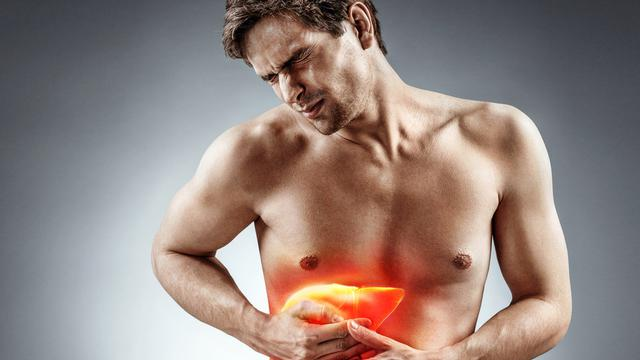

Kanker Hati
Hati merupakan organ yang berfungsi untuk menetralisir racun di dalam tubuh, membentuk protein dan faktor pembekuan darah,
serta memetabolisme beberapa hormon. Kanker hati adalah suatu tumor ganas yang bermula dari organ hati. Kondisi ini terjadi ketika
sel-sel di dalam hati bermutasi dan membentuk tumor. Terdapat dua jenis kanker hati, yaitu:
- Kanker yang berasal dari sel hati (hepatoma).
- Kanker yang berasal dari organ lain yang menjalar ke hati (metastasis).
Gejala Kanker Hati
Gejala umum dari kanker hati,antara lain
- Berat badan menurun tanpa penyebab yang jelas.
- Demam berkepanjangan yang tidak jelas penyebabnya.
- Gangguan kesadaran
- Gatal di seluruh tubuh.
- Kehilangan nafsu makan.
- Mata dan kulit terlihat kuning (jaundice).
- Mual dan muntah.
- Pembesaran limpa.
- Penumpukan cairan dalam perut (asites).
- Perut terasa penuh meski hanya makan sedikit.
- Rasa tidak nyaman atau nyeri pada perut kanan atas.
- Tinja berwarna putih seperti kapur.
- Tubuh mudah lelah dan lemas.
- Tubuh mudah memar dan mengalami perdarahan.
- Ukuran hati membesar.
- Urine berwarna gelap.
Penyebab Kanker Hati
Penyebab kanker hati adalah mutasi atau perubahan sel-sel pada organ hati,
yang berakibat tidak terkendalinya pertumbuhan sel, sehingga membentuk tumor.
Kendati demikian, penyebab dari mutasi sel tersebut belum diketahui secara pasti.
Faktor Risiko
Beberapa faktor risiko kanker hati, antara lain:
- Infeksi kronis hepatitis B atau hepatitis C.
- Kondisi tertentu, seperti diabetes, lupus, atau obesitas.
- Konsumsi alkohol berlebihan.
- Menjalani operasi pengangkatan kandung empedu (kolesistektomi).
- Merokok.
- Paparan aflatoksin, suatu racun dari jamur yang mengontaminasi tumbuh-tumbuhan yang akan dijadikan makanan, serta tidak disimpan dengan baik.
- Paparan radiasi dari foto Rontgen atau CT scan.
- Paparan zat kimia, seperti arsenik, vinil klorida, dan trichloroethylene.
- Penyakit hati turunan, seperti hemokromatosis dan penyakit Wilson.
- Penyakit perlemakan hati.
- Sirosis atau terbentuknya jaringan parut di hati.
- Sistem kekebalan tubuh lemah, misalnya karena menderita HIV/AIDS atau baru menjalani transplantasi organ tubuh.
Diagnosis Kanker Hati
Dokter akan mendiagnosis kanker hati dengan melakukan wawancara medis, pemeriksaan fisik, serta pemeriksaan penunjang seperti:
- Pemeriksaan darah, terutama untuk menilai fungsi organ hati serta kadar Alpha Fetoprotein (AFP) dalam darah.
- Pencitraan dengan USG, CT scan, atau MRI, untuk mengetahui bentuk hati, keberadaan tumor, lokasi kanker, serta penyebarannya
- Biopsi hati, dengan mengambil sedikit jaringan hati untuk diperiksa di laboratorium.
- Laparoskopi, untuk memeriksa kondisi bagian dalam perut dengan menggunakan selang berkamera.
Pencegahan Kanker Hati
Beberapa upaya yang dapat dilakukan untuk mencegah kanker hati, antara lain:
- Melakukan hubungan intim yang aman.
- Mendapatkan vaksin hepatitis B.
- Menggunakan alat pelindung diri saat terpapar bahan kimia.
- Mengurangi konsumsi alkohol.
- Menjaga berat badan tetap ideal.
- Menjauhi NAPZA, terutama dalam bentuk suntik.
Pengobatan Kanker Hati
Jika tumor masih berukuran kecil, pengobatan utama adalah dengan melakukan operasi pengangkatan tumor, yang dapat dilanjutkan dengan transplantasi hati.
Namun, jika kondisi tumor sudah berukuran besar dan tidak dapat dioperasi, pengobatan yang dapat dilakukan adalah dengan kemoterapi dan radiasi untuk mengecilkan
ukuran tumor dan meringankan gejala yang dialami penderitanya, tetapi tidak dapat menghilangkan tumor sepenuhnya.